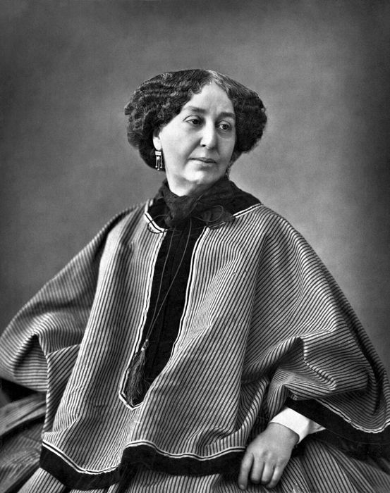
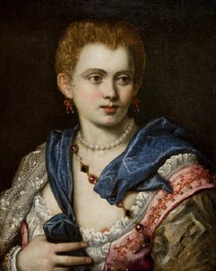
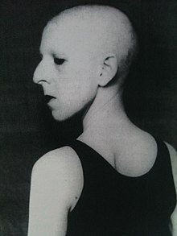
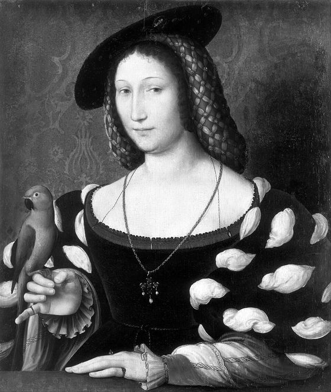
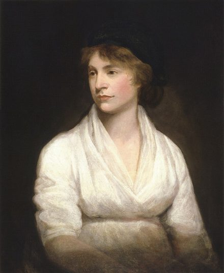

Words of Gender
27The prototype of an archive of women authors · nine authors, twenty-seven concepts
an archive by Nicole Liggeri, Chiara Parravicini, Lucia Bertoldini and Alice Picco
How have different authors declined the same concepts related to the female gender (e.g. grace, beauty, maternity …) in different historical and cultural contexts?
After Vera Gheno, Parole d’altro genere (Rizzoli, 2023)
Nine voices, five centuries
1958The excerpts in the order of their first edition as recorded in each TEI header. The open diamond marks the edition the text was transcribed from, where the encoding names one; the dashed line is the distance between the two.
They wrote it in their own words

George SandC’est que tu n’as rien d’une fille et tout d’un garçon, dans ton air et dans tes manières.

Veronica FrancoE se ben «meretrice» mi chiamate, / o volete inferir ch’io non vi sono, / o che ve n’èn tra tali di lodate.

Claude CahunDes seins superflus ; les dents lourdes et contradictoires ; les yeux et les cheveux du ton le plus banal…

Marguerite de NavarreCelle qui preféroit son plaisir à tout l’honneur du monde

Mary WollstonecraftI should think, wish with me, that they may every day grow more and more masculine.
Words in crimson are the ones each passage turns on. Every portrait opens its passage in the reading room.
Three ways in
Read the texts
Each excerpt rendered from its TEI file, with the annotated concepts as highlights you can switch on, four at a time.
Open the reading room iiCompare a concept
A matrix of which authors share which concepts. Choose one and read every passage tagged with it, author beside author.
Open the concept matrix iiiAbout & method
Context, research question, the TEI and linked-data encoding, the alphabet of concepts, bibliography, portraits and team.
Read the documentation